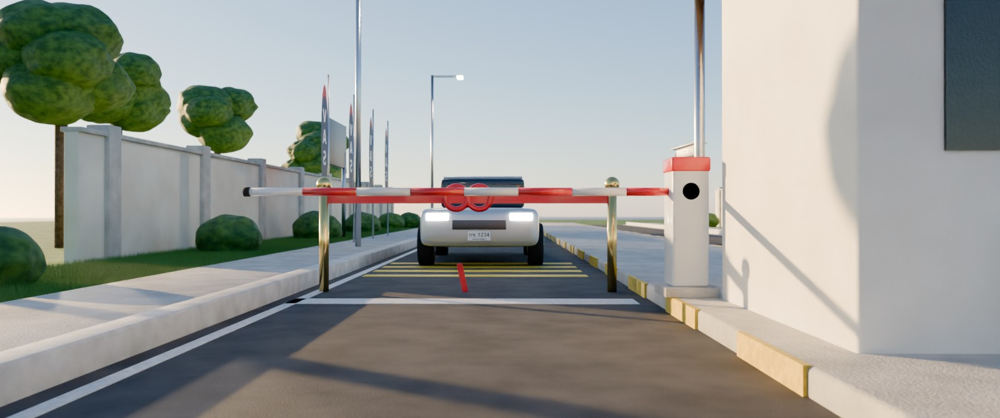
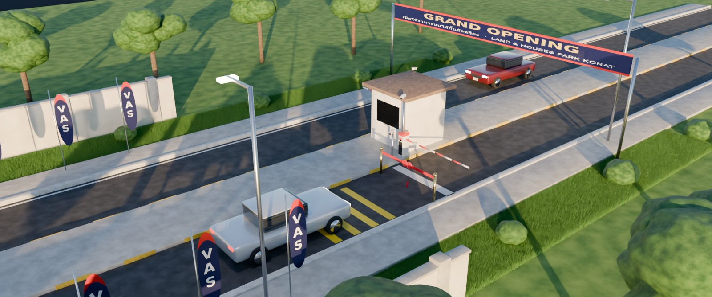
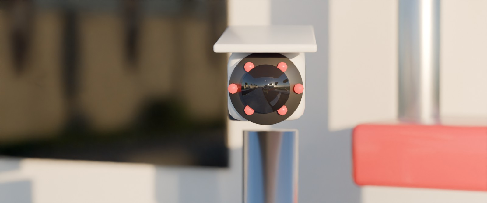
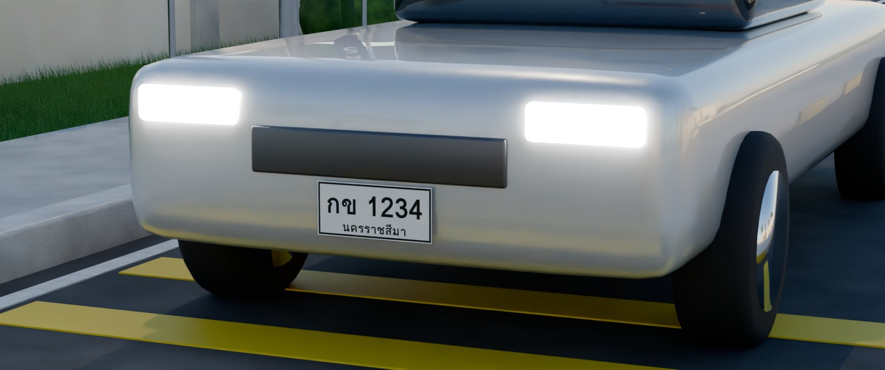
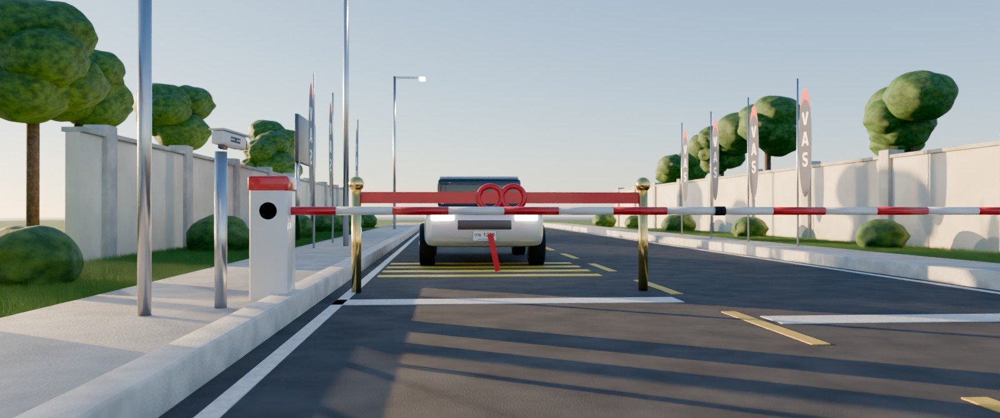
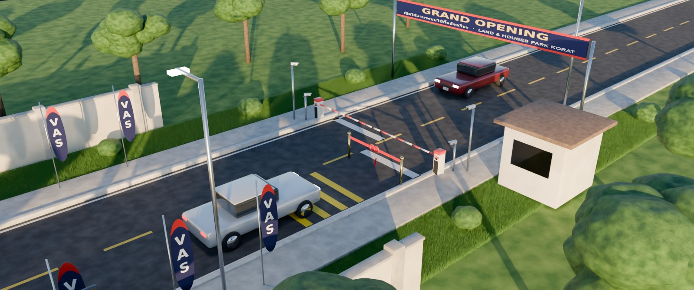
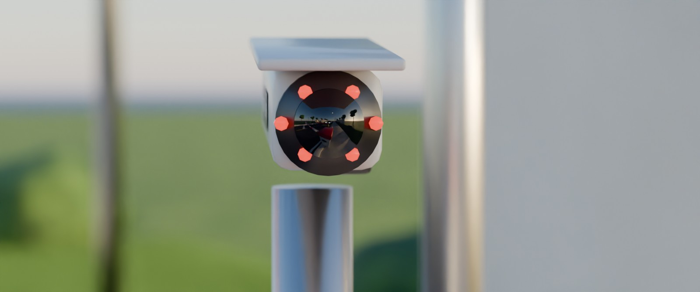
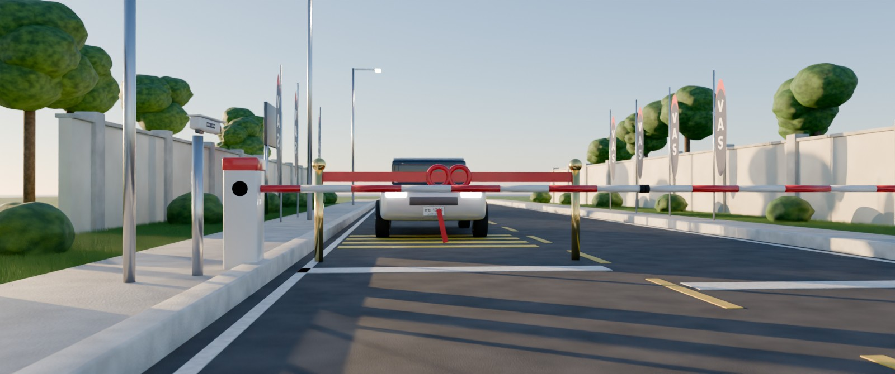
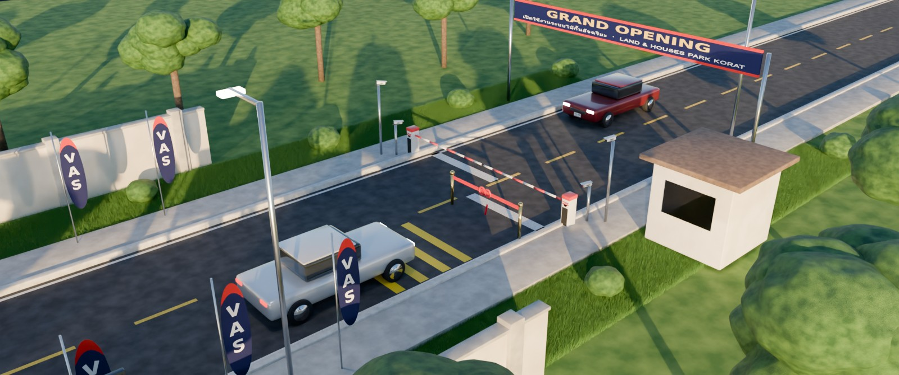
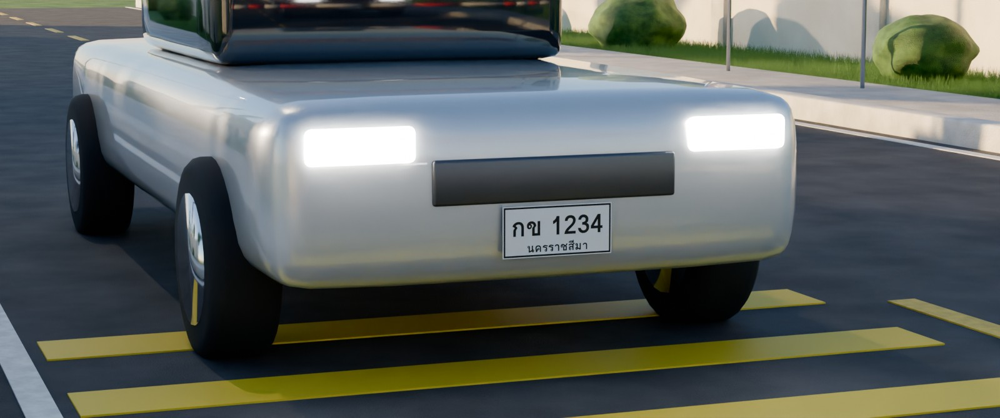

Grand Opening · Land & Houses Park Korat
VAS Smart Gate + LPR
ภาพจำลองจุดติดตั้งไม้กั้นอัจฉริยะและกล้องอ่านป้ายทะเบียน 3 จุด เรนเดอร์ด้วย Blender (Cycles) แสงเย็นช่วงพระอาทิตย์ตก เฟรมภาพยนตร์ 2.39:1 ตามแบบติดตั้งจริงของแต่ละจุด
G1 ประตูหน้า ป้อมกลางถนน · ไม้กั้นติดป้อม · ถนน 10.0 ม. · แขน 3.60 ม.




G2 ด้านหลัง ฝั่งใต้ซอย 4 ไม้กั้นริมถนน ตู้แนวเดียวกัน · ถนน 7.0 ม. · แขน 3.70 ม. ×2




G3 ด้านหลัง ฝั่งเหนือซอย 4 ไม้กั้นริมถนน ตู้แนวเดียวกัน · ถนน 7.0 ม. · แขน 3.70 ม. ×2




ภาพจำลองเพื่อการนำเสนอ ขนาดตู้ VAS117 ป้าย และความกว้างถนนเป็นค่าประมาณจนกว่าจะได้สเปกและการวัดหน้างาน · ไฟล์ .blend และสคริปต์ cinematic.py เรนเดอร์ใหม่ที่ความละเอียด 4K ได้